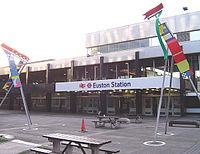
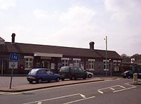
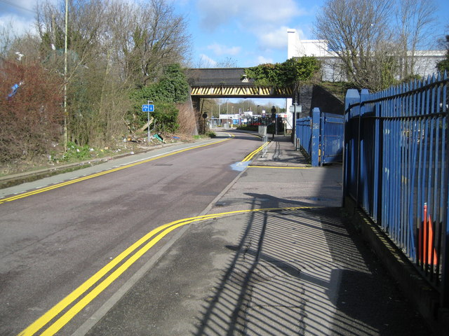
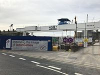

| Image |
Name |
Information |
| Current Picture |
Current Name |
Used Name |
Postcode/Position |
Time of Opened |
Zone |
Lines |
Usage |
|  |
Euston |
|
NW1 2DU |
Euston Station
Kings Cross, London
|
22 June 1907 |
1 |
Northern |
43.10 |
|  |
Amersham |
Amersham & Chesham Bois |
HP6 5AZ |
Amersham |
9 September 1892 |
9 |
Metropolitan |
2.36 |
 |
Baker Street |
|
HA3 8NT |
Forward Drive, Christchurch Avenue, Harrow |
10 January 1863 |
1 |
Metropolitan |
29.75 |
|  |
Cassiobridge |
|
WD18 7QQ |
Cassiobridge Road |
2020 |
7 |
Metropolitan |
0 |
|  |
Nine Elms |
|
SW8 4SR |
52-, 58 Wandsworth Rd, London |
2020 |
1 |
Northern |
0 |
 |
Queensway |
Queen's Road |
W2 4RH |
Bayswater Rd, London |
16 July 1900 |
1 |
Central |
8.71 |
 |
Waterloo |
|
SE1 8SR
|
South Bank, London |
1 March 1906 |
1 |
Waterloo & City |
100.36 |
 |
Wood Green |
|
N22 6EB |
Wood Green, London |
19 September 1932 |
3 |
Piccadilly |
13.20 |
 |
Wood Lane |
|
W12 7SL |
Ariel Way, Shepherd's Bush, London |
12 October 2008 |
2 |
Hammersmith & City |
3.68 |
 |
Charing Cross |
Strand |
WC2N 6DX |
Embankment Pl London
|
10 March 1906 |
1 |
Bakerloo |
8.13 |